ΘΕΩΔΟΡΩΣ ΚΟΛΟΚΟΤΡΩΝΗΣ
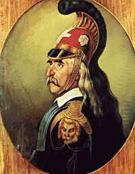
Παιδικά χρόνια
Ο Θεόδωρος Κολοκοτρώνης γεννήθηκε στο Ραμοβούνι Μεσσηνίας στις 3 Απριλίου 1770 και ήταν Έλληνας αρχιστράτηγος και ηγετική μορφή της Επανάστασης του 1821,οπλαρχηγός, πληρεξούσιος, Σύμβουλος της Επικρατείας. Απέκτησε το προσωνύμιο Γέρος του Μοριά. Μετά θάνατον τιμήθηκε από την Ελληνική Πολιτεία με τον βαθμό του Στρατάρχη.Από μικρός, ο Θεόδωρος Κολοκοτρώνης ακολούθησε τον πατέρα του στις διάφορες περιπέτειές του. Σε ηλικία 15 ετών, το 1785, μετακόμισε με τη μητέρα και τα αδέρφια τουστο χωριό Άκοβος όπου ζούσε ο θείος του Αναγνώστης. Διορίστηκε αρματωλός εναντίον των κλεφτών που λυμαίνονταν την περιφέρεια του Λεονταρίου. Η δράση του Κολοκοτρώνη,σιγά-σιγά απλώθηκε, μαζί με τη φήμη του, σ' όλη την Πελοπόννησο. Το 1802 είχε γίνει τόσο επικίνδυνος στους κατακτητές, ώστε ο βοεβόδας της Πάτρας πέτυχε να εκδοθεί σουλτανικό φιρμάνι, που τον καταδίκαζε σε θάνατο και ανάθετε την εκτέλεση στους προεστούς, οι οποίοι αν δεν κατόρθωναν να τον σκοτώσουν θα εκτελούνταν οι ίδιοι.Tο 1805 ο Θεόδωρος Κολοκοτρώνης πήρε μέρος στις ναυτικές επιχειρήσεις, του ρωσικού στόλου κατά τον Ρωσοτουρκικό πόλεμο.Τον Ιανουάριο του 1806 και ενώ βρισκόταν στην Πελοπόννησο βγήκε διάταγμα δίωξής του. Αποτέλεσμα αυτού ήταν να ακολουθήσει πολύμηνη περιπετειώδης και δραματική, καταδίωξή του από τους Τούρκους σε πολλά χωριά και πόλεις της Πελοποννήσου.Από το 1810 υπηρέτησε στο ελληνικό στρατιωτικό σώμα του αγγλικού στρατού στη Ζάκυνθο, όπου γρήγορα διακρίθηκε για τη δράση του εναντίον, των Γάλλων και έφτασε στο βαθμό του ταγματάρχη.
Φιλική Εταιρεία
Το 1818 μυήθηκε στη Φιλική Εταιρεία και τον Ιανουάριο του 1821 ξαναγύρισε στη Μάνη όπου άρχισε να προετοιμάζει την Επανάσταση στην Πελοπόννησο γνωρίζοντας ότι η ημέρα έναρξης ήταν η 25 Μαρτίου.Βρέθηκε στην Καλαμάτα, κατά την αναίμακτη κατάληψη της πόλης στις 23 Μαρτίου 1821 υπό τον Πετρόμπεη Μαυρομιχάλη και την πομπώδη δοξολογία. Την επομένη κινήθηκε προς την Μεγαλόπολη με τον Νικηταρά και την 25η Μαρτίου το πρωί βρίσκονταν, στον Κάμπο της Καρύταινας ή της Μεγαλόπολης.Είχε οριστεί στις 25 Μαρτίου να βρίσκονται όλοι οι οπλαρχηγοί στις επαρχίες τους ώστε να κηρυχθεί η Επανάσταση, όπως και έγινε.
Στην Επανάσταση
Πρωταγωνίστησε σε πολλές στρατιωτικές επιχειρήσεις του Αγώνα,όπου διέσωσε τον Αγώνα στην Πελοπόννησο,αφού πρυτάνευσαν η ευφυΐα και η τόλμη του στρατηγικού του νου.Οι επιτυχίες αυτές τον ανέδειξαν σε αρχιστράτηγο της Πελοποννήσου. Στη διάρκεια του Εμφυλίου πολέμου, πολλές φορές προσπάθησε να αμβλύνει τις αντιθέσεις ανάμεσα στους αντιπάλους, αλλά παρόλα αυτά δεν απέφυγε τη ρήξη. Μετά από ένοπλες συγκρούσεις, ο ίδιος και ο γιος του συνελήφθησαν και φυλακίστηκαν στο Ναύπλιο.

Το επιβλητικό άγαλμα του Θεοδώρου Κολοκοτρώνη στο Ραμοβούνι Μεσσηνίας, τόπο γεννήσεώς του
Μέτα την επανάσταση, και θάνατος
Ως το τέλος της Επανάστασης, ο Κολοκοτρώνης συνέχισε να διαδραματίζει ενεργό ρόλο στα στρατιωτικά και πολιτικά πράγματα της εποχής.Υπήρξε ένθερμος οπαδός της πολιτικής του Καποδίστρια και πρωτοστάτησε στα γεγονότα για την ενθρόνιση του Όθωνα Το 1833, όμως, οι διαφωνίες του με την Αντιβασιλεία τον οδήγησαν, μαζί με άλλους αγωνιστές, πάλι στις φυλακές της Ακροναυπλίας στο Ναύπλιο με την κατηγορία της εσχάτης προδοσίας. Έτσι, στις 25 Μαΐου 1834, μαζί με τον Πλαπούτα, καταδικάστηκε σε θάνατο. Έλαβε χάρη μετά την ενηλικίωση του Όθωνα το 1835, οπότε και ονομάστηκε στρατηγός και έλαβε το αξίωμα του «Συμβούλου της Επικρατείας».Ο Θεόδωρος Κολοκοτρώνης πέθανε στις 16 Φεβρουαρίου 1843 το πρωί, από εγκεφαλικό επεισόδιο, έχοντας επιστρέψει από γλέντι στα βασιλικά ανάκτορα, όπου τα τελευταία χρόνια ήταν υπασπιστής του Όθωνα.
ΠΕΤΡΟΜΠΕΗΣ ΜΑΥΡΟΜΙΧΑΛΗΣ
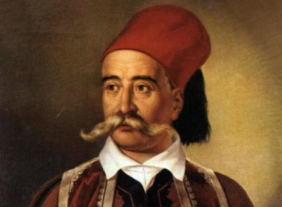
Βιογραφικα στοιχεία
Ο Πετρόμπεης Μαυρομιχάλης (πραγματικό όνομα: Πέτρος Μαυρομιχάλης) γεννήθηκε στην Αρεόπολη Μάνης, στις 6 Αυγούστου του 1765 και ήταν Έλληνας οπλαρχηγός του 1821 και πολιτικός,αναδειχθείς "αρχιστράτηγος των σπαρτιατικών δυνάμεων"και πρωθυπουργός της Ελλάδας από τη θέση του προέδρου του Εκτελεστικού Σώματος του ελληνικού κράτους.Γεννήθηκε στην Τσίμοβα,πρωτεύουσα τότε της Μάνης,Κατά την περίοδο του διωγμού των κλεφτών, φυγάδευσε πολλούς προς τα γαλλοκρατούμενα Επτάνησα.Συνδέθηκε συναισθηματικά με τη Γαλλία καθώς πίστευε ότι ήταν η μόνη δύναμη που μπορούσε πραγματικά να βοηθήσει τους υποδουλωμένους Έλληνες να ξεσηκωθούν.
Στην επανάσταση
Στις 2 Αυγούστου 1818, ο Πετρόμπεης Μαυρομιχάλης, που ήταν τότε 53 χρονών, μυήθηκε στη φιλική Εταιρεία, από τον Ηλία Χρυσοσπάθη στις Κιτριές, αλλά σύμφωνα με τον κατάλογο των Φιλικών που συνέταξε ο Παναγιώτης Σέκερης, από τον Κυριάκο Καμαρινό. Πήρε μέρος στην Άλωση της Τριπολιτσάς, της Καλαμάτας και του Άργους, καθώς και στην άμυνα του Μεσολογγίου. Επίσης, σημαντικό ρόλο διαδραμάτισε και στην άμυνα της Μάνης από την επίθεση των Τουρκοαιγυπτίων και συγκεκριμένα του Ιμπραήμ. Κατά τη διάρκεια του Απελευθερωτικού Αγώνα δύο γιοι του Πετρόμπεη σκοτώθηκαν σε μάχες, οι Ηλίας και Ιωάννης Μαυρομιχάλης.
Συμμετοχή πέρα απο τον αγώνα
Στις 25 Μαρτίου ο Πετρόμπεης συγκρότησε τη Μεσσηνιακή Γερουσία,με πρόεδρο τον ίδιο όπου και εκδίδει την ιστορική διακήρυξη (Προειδοποίηση) προς τις Ευρωπαϊκές Αυλές,την οποία υπέγραψαν ο ίδιος ως αρχιστράτηγος,και όλα τα μέλη της Γερουσίας. Στην Α' Εθνοσυνέλευση της Επιδαύρου εκλέχτηκε αντιπρόεδρος του Βουλευτικού, ενώ κατά τη διάρκεια της Επανάστασης διετέλεσε πρόεδρος της Β' Εθνοσυνέλευσης (1823), πρόεδρος του Βουλευτικού (1823), πρόεδρος του Εκτελεστικού (1823), μέλος της Διοικητικής Επιτροπής της Ελλάδος και μέλος του νομοτελεστικού στην Εθνοσυνέλευση του Άστρους.Στην Εθνοσυνέλευση της Τροιζήνας ο Πετρόμπεης αποδέχτηκε την εκλογή του Καποδίστρια ως κυβερνήτη της Ελλάδος. Η κόντρα δεν άργησε να ξεσπάσει. Το Πάσχα του 1830 ο αδελφός του Πετρόμπεη, Τζανής, ξεσηκώνει όλη τη Μάνη σε στάση κατά του Καποδίστρια. Ο Πετρόμπεης προσπάθησε να διαφύγει στη Ζάκυνθο, αλλά συνελήφθη και φυλακίστηκε για 9 μήνες στην Ακροναυπλία. Τον επόμενο χρόνο, ύστερα από διαταγή του Αυγουστίνου Καποδίστρια, ο Πετρόμπεης αποφυλακίστηκε
θάνατος
Πέθανε στην Αθήνα στις 17 Ιανουαρίου 1848.Στην κηδεία του εκφώνησαν λόγους ο Σπυρίδων Τρικούπης και ο Παναγιώτης Σούτσος.
ΔΗΜΗΤΡΙΟΣ ΥΨΗΛΑΝΤΗΣ

Βιογραφικα στοιχεία
Ο Δημήτριος Υψηλάντης γεννήθηκε στην Κωνσταντινούπολη στις 25 Δεκεμβρίου 1793 και ήταν Έλληνας πρίγκηπας, στρατιωτικός, αγωνιστής της Ελληνικής Επανάστασης του 1821 και πολιτικός.Αδελφός του ήταν ο Αλέξανδρος Υψηλάντης, ο αρχηγός της Φιλικής Εταιρείας. Στάλθηκε στη Γαλλία για να σπουδάσει σε στρατιωτικές σχολές και στη συνέχεια κατατάχθηκε στην αυτοκρατορική φρουρά του Τσάρου στην Πετρούπολη, φτάνοντας έως το βαθμό του λοχαγού. Το 1818 μυήθηκε στη Φιλική Εταιρεία. Από τον Οκτώβριο του 1820 και έως την έναρξη της Επανάστασης στις Παραδουνάβιες Ηγεμονίες, υπηρετούσε στο Κίεβο ως υπασπιστής του στρατηγού Ραγέφσκι.
Η δράση του κατά την επανάσταση
Την 1η Ιουλίου 1821, 22 οπλαρχηγοί αναγνώρισαν στα Τρίκορφα τον Υψηλάντη ως αρχιστράτηγο και του ζήτησαν να αναλάβει την αρχηγία της πολιορκίας της Τριπολιτσάς.Καθώς τουρκικά στρατεύματα απειλούν να αποβιβαστούν στον Κορινθιακό κόλπο, αναχωρεί εσπευσμένα από την Τριπολιτσά στις 13 Σεπτεμβρίου 1821 προς τις ακτές του Κορινθιακού. Θα γυρίσει πίσω όταν θα πληροφορηθεί την πτώση της Τριπολιτσάς για να αποκαταστήσει την τάξη: καθαριότητα της πόλης και προστασία των Τούρκων αιχμαλώτων. Οι συγκεντρωμένοι στο Άργος πολιτικοί διέδιδαν συκοφαντίες κατά του Υψηλάντη. Αυτός έλαβε μέτρα για την ίση διανομή των λαφύρων εν όψει της πολιορκίας του Ναυπλίου.Ο Υψηλάντης το Σεπτέμβριο και τον Οκτώβριο του 1821 προέβη σε πρωτοβουλίες σχετικές με τη συγκρότηση Εθνικής Συνέλευσης. Ο Υψηλάντης, με μόνη συμπαράσταση τους στρατιωτικούς, τελικά δέχθηκε να γίνει Πρόεδρος της Πελοποννησιακής Γερουσίας. Στις 11 Δεκεμβρίου έφυγε για την πολιορκία της Κορίνθου. Στα πλαίσια της Α΄ Εθνοσυνέλευσης, εξελέγη πρόεδρος του Βουλευτικού Σώματος.Την 8 Ιουλίου 1822, επικεφαλής δύναμης 300 ανδρών και με συμπαραστάτες τους Πάνο Κολοκοτρώνη και Γεώργιο Μαυρομιχάλη, αντιστάθηκε επί τριήμερο στην προέλαση του Δράμαλη, στο Ναύπλιο. Ξεχώρισε στη μάχη των Μύλων (κοντά στο Άργος), όπου διορίστηκε αρχηγός των ελληνικών δυνάμεων και χάρη στη γενναιότητά του απέκρουσε τον Ιμπραήμ.
Η δράση του κατά την Καποδιστριακή περίοδο
Με την έλευση του Ιωάννη Καποδίστρια, ο Υψηλάντης διορίστηκε στρατάρχης του Στρατού και ανέλαβε την οργάνωσή του και τη μετατροπή του σε τακτικό στρατό με βάση τα ευρωπαϊκά πρότυπα.Ο Κυβερνήτης τού ανέθεσε την αρχηγία του στρατού της Ανατολικής Ελλάδας. Τον Οκτώβριο του 1828, ως στρατάρχης Δημητρής Υψηλάντης, επικεφαλής των έξι χιλιαρχιών που είχαν συγκροτηθεί, πραγματοποίησε νικηφόρες επιχειρήσεις κατά των Τούρκων στη Βοιωτία και διατήρησε την περιοχή υπό ελληνικό έλεγχο. Στις 12 Σεπτεμβρίου 1829, διηύθυνε την τελευταία μάχη του Αγώνα στην Πέτρα της Βοιωτίας.Στις 31 Μαρτίου 1832, επιτροπή αποτελούμενη από στρατιωτικούς παρουσιάστηκε στη Γερουσία ζητώντας να μπει και ο Δημήτριος Υψηλάντης στη Διοικητική Επιτροπή.Στις 2 Απριλίου, η Γερουσία ψήφισε νέα Διοικητική Επιτροπή με τον Υψηλάντη να είναι ένα από τα μέλη της.
Προσωπική ζωή και θάνατος
Ο Δημήτριος Υψηλάντης σκόπευε να νυμφευθεί τη Μαντώ Μαυρογένους.Όμως ο Ιωάννης Κωλέττης τη διέβαλε στον Υψηλάντη και ο τελευταίος αθέτησε την υπόσχεση που της είχε δώσει και τελικά χώρισαν.Μικρόσωμος και φιλάσθενος, απεβίωσε νέος στο Ναύπλιο τον Αύγουστο του 1832, πιθανώς από κληρονομική μυοτονική δυστροφία.
Αποτίμηση της προσωπικότητάς του
Κατά την εκφώνηση του επικήδειου λόγου για τον Υψηλάντη, ο Γεώργιος Τερτσέτης, είπε χαρακτηριστικά, μεταξύ άλλων: "Επέλεξε να θυσιάσει τα πάντα για την πατρίδα, χωρίς να σκιάσει την ψυχή του το μίσος για τους άλλους". Προς τιμήν του, τρεις πόλεις των ΗΠΑ φέρουν το όνομά του (Ypsilanti): στις πολιτείες Μίσιγκαν, Βόρεια Ντακότα και Τζόρτζια.
ΠΑΛΑΙΩΝ ΠΑΤΡΩΝ ΓΕΡΜΑΝΟΣ Γ΄
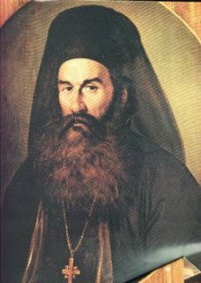
Βιογραφικα στοιχεία
Ο Παλαιών Πατρών Γερμανός γεννήθηκε στη Δημητσάνα Αρκαδίας στις 25 Μαρτίου 1771 - Ναύπλιο, και ήταν Έλληνας ιεράρχης, μητροπολίτης Παλαιών Πατρών και ένας από τους πρωταγωνιστές ιεράρχες της Ελληνικής Επανάστασης του 1821 με διπλωματική και πολιτική δράση. Φοίτησε αρχικά στη φημισμένη Σχολή Δημητσάνας, στο Άργος και μετέπειτα στη Σχολή της Σμύρνης. Χειροτονήθηκε διάκονος λαμβάνοντας το όνομα Γερμανός από τον Μητροπολίτη Άργους και Ναυπλίου Ιάκωβο. Στις αρχές του 1797 μετέβη στη Σμύρνη και υπηρέτησε δίπλα στον μητροπολίτη Γρηγόριο που ήταν συμπατριώτης και θείος του (ο μετέπειτα πατριάρχης Γρηγόριος Ε΄), τον οποίον και ακολούθησε στη Κωνσταντινούπολη και στη μετέπειτα εξορία του στο Άγιο Όρος.Το Νοέμβριο του 1818 μυήθηκε στη Φιλική Εταιρεία από τον Φιλικό Αντώνιο Πελοπίδα. Ο Γερμανός συνέστησε τον Πελοπίδα στους Ανδρέα Ζαΐμη και Ανδρέα Λόντο οι οποίοι επίσης μυήθηκαν στην Φιλική Εταιρεία, ενώ ο ίδιος εμύησε διάφορους ιερωμένους και οπλαρχηγούς όπως τον Χαριουπόλεως Βησσαρίωνα, τον Κερνίτζης Προκόπιο κ.ά.
Δράση
Φθάνοντας στην Πάτρα, κατά ορισμένες πηγές το απόγευμα της 25 και κατ' άλλους στις 26 Μαρτίου, και συνεχιζόμενης της πολιορκίας του κάστρου όπου είχαν εγκλειστεί οι Τούρκοι, ο Γερμανός κήρυξε την Επανάσταση και είχε μια συνάντηση με τους ξένους πρόξενους (Πουκεβίλ Γαλλίας και Γκρην Μεγάλης Βρετανίας). Ως πρόεδρος της επαναστατικής Αρχής της Αχαΐας, του λεγόμενου Αχαϊκού Διευθυντηρίου επέδωσε επαναστατικό μανιφέστο με ημερομηνία 26 Μαρτίου 1821.Σύμφωνα με μια ευρέως διαδεδομένη εξιστόρηση των γεγονότων, στις 25 Μαρτίου του 1821 ο Γερμανός ύψωσε τη σημαία του αγώνα και κήρυξε την έναρξη της Ελληνικής Επανάστασης στο μοναστήρι της Αγίας Λαύρας, που χρησιμοποιούνταν ως σημείο συγκέντρωσης προεστών, οπλαρχηγών και κληρικών την περίοδο αυτή.
Πολιτική και διπλωματική δράση
Τον Μάιο του 1821 συμμετείχε στην Συνέλευση των Καλτεζών στην Αρκαδία. Στα απομνημονεύματά του, ενώ αναφέρει την Συνέλευση, δεν αναφέρει την δική του συμμετοχή.Τον Δεκέμβριο του 1821 συμμετείχε στην Α' Εθνοσυνέλευση στην Επίδαυρο, συμμετοχή την οποία δεν αναφέρει στα απομνημονεύματά του. Τον Απρίλιο του 1826 εκλέχθηκε μέλος της Γ΄ Εθνοσυνέλευσης στην Επίδαυρο όπου και ανέλαβε τη διεύθυνση των εργασιών της, εκλεγείς και μέλος της επί των Εσωτερικών επιτροπής.
Θάνατος
Προσβλήθηκε από εξανθηματικό τύφο, που είχε καταστεί τότε ενδημικός στο Ναύπλιο, όπου και πέθανε στις 30 Μαΐου του 1826. Η κηδεία του έγινε στο Ναύπλιο με κάθε μεγαλοπρέπεια και αργότερα τα οστά του μεταφέρθηκαν στη Δημητσάνα.
ΙΩΑΝΝΗΣ ΜΑΚΡΥΓΙΑΝΝΗΣ
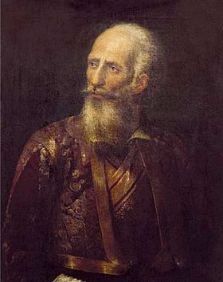
Βιογραφικα στοιχεία
Ο Ιωάννης Τριανταφύλλου, γνωστότερος ως Ιωάννης Μακρυγιάννης γεννήθηκε στο Κροκύλειο Φωκίδας το 1797 και ήταν Έλληνας οπλαρχηγός της Ελληνικής Επανάστασης του 1821, στρατιωτικός, πολιτικός και συγγραφέας.
Η μύηση στη Φιλική Εταιρεία
Το 1820, μυήθηκε στη Φιλική Εταιρεία, άγνωστο από ποιόν, αφού ο ίδιος δεν τον ονομάζει στα Απομνημονεύματά του, είχε δε την ιδιότητα του κληρικού-οικονόμου. Το Σεπτέμβριο του 1820 φτάνει στην Άρτα ο βοεβόδας της Ναυπάκτου Μπαμπά πασάς και συλλαμβάνει τον Θανάση Λιδωρίκη και τον έμπιστό του Μακρυγιάννη, αλλά ο πρώτος κινητοποιώντας το δίκτυο των γνωριμιών του στο αληπασάδικο και σουλτανικό περιβάλλον της Άρτας, κατόρθωσε να απελευθερωθεί ο ίδιος και ο πρώην υποτακτικός του
Η επαναστατική του δράση
Τον Αύγουστο του 1821, μαζί με 18 άντρες από την Άρτα,πήρε μέρος στη Μάχη του Σταυρού στα Τζουμέρκα, στη μάχη του χωριού Πέτα στις 11 Σεπτεμβρίου 1821, όπου νίκησαν περίπου 9.000 Τούρκους του Χασάν μπέη, και όπου τραυματίσθηκε ελαφρά στο πόδι, και στην πολιορκία της Άρτας το Νοέμβριο του 1821 και την εκπόρθησή της. Πολέμησε στην πτώση της Αθήνας ως απλός στρατιώτης.Ως αναγνώριση των υπηρεσιών του, του προσφέρθηκε το αξίωμα του πολιτάρχη της απελευθερωμένης πόλης.Το 1823 συνεργαζόμενος με το σώμα του Νικηταρά συμμετείχε σε μια σειρά στρατιωτικών επιχειρήσεων στη Στερεά Ελλάδα. Πολέμησε στους ελληνικούς εμφυλίους πολέμους με την πλευρά του Γεωργίου Κουντουριώτη.Το 1825 υπερασπίστηκε το Νεόκαστρο από τον Ιμπραήμ, έως την πτώση του (6 Μαΐου 1825). Στις 13 Ιουνίου του 1825, μαζί με τον Δημήτριο Υψηλάντη και λίγες εκατοντάδες άντρες, οχυρώθηκε στους Μύλους της Αργολίδας και αντιμετώπισε με μεγάλη επιτυχία τους πολλαπλάσιους άνδρες του Ιμπραήμ. Συμμετείχε επίσης στην Πολιορκία της Ακροπόλεως (1826-27) και συνεργάστηκε με τον Καραϊσκάκη, ο οποίος προσπαθούσε τότε να διασπάσει τον οθωμανικό κλοιό γύρω από την Ακρόπολη, αλλά απέτυχε.
Ο θάνατος του
Πέθανε στις 27 Απριλίου του 1864 στην Αθήνα, εξ υπερβαλλούσης σωματικής εξαντλήσεως, σε ηλικία 67 ετών.Την επομένη έγινε η κηδεία στο μητροπολιτικό ναό της Αγίας Ειρήνης.
ΟΔΥΣΣΕΑΣ ΑΝΔΡΟΥΤΣΟΣ
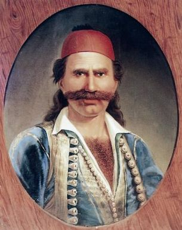
Βιογραφικα στοιχεία
Ο Οδυσσέας Ανδρούτσος γεννήθηκε στην Ιθάκη το 1788, και ήταν επιφανής αγωνιστής οπλαρχηγός της Ελληνικής Επανάστασης του 1821. Πολέμησε μέχρι το 1820 για λογαριασμό του Αλή Πασά και στη συνέχεια αγωνίστηκε για την ελευθερία της Ελλάδας.Ο πατέρας του Οδυσσέα, καπετάν Ανδρούτσος, είχε λάβει μέρος στην επανάσταση του Λάμπρου Κατσώνη και συνελήφθη από τους Βενετούς, παραδόθηκε στους Τούρκους και αποκεφαλίστηκε το 1797 στην Κωνσταντινούπολη. Έτσι ο μικρός γιος του, Οδυσσέας, έμεινε ορφανός σε ηλικία 8 περίπου ετών.
H δράση του κατά την επανάσταση
Λίγο πριν τον θάνατο του Αλή Πασά Τεπελενλή το 1822, και σε συνεννόηση με αυτόν, ο Οδυσσέας Ανδρούτσος με 1.500 άνδρες, ανεξαρτητοποιήθηκε και άρχισε έναν τρίχρονο αγώνα εναντίον των Οθωμανών.Το αποκορύφωμα των μαχών του Ανδρούτσου ήταν η ηρωική Μάχη στο Χάνι της Γραβιάς στις 8 Μαΐου του 1821). Με λίγους Έλληνες οχυρώθηκε μέσα στο χάνι, όπου αντιμετώπισε επιτυχώς πολλαπλάσιο στράτευμα από Οθωμανούς υπό τον Ομέρ Βρυώνη. Ύστερα από την απόκρουση των Οθωμανών, ο Βρυώνης έδωσε διαταγή να φέρουν κανόνια από το Ζητούνι με σκοπό να γκρεμίσει το χάνι, αλλά ο Ανδρούτσος και οι συναγωνιστές του κατάφεραν να αποδράσουν μέσα στη νύχτα με ελάχιστες απώλειες.Στη μάχη αυτή, η στρατηγική ιδιοφυΐα του Ανδρούτσου θριάμβευσε. Έτσι, δικαιωματικά κατέλαβε τη θέση του αρχηγού των όπλων της Βοιωτίας, και ουσιαστικά αυτός επηρέασε την τύχη της επαναστάσεως στην ανατολική Στερεά Ελλάδα κατά τα επόμενα έτη.Την άνοιξη του 1822 κατηγορήθηκε από τον Ιωάννη Κωλέττη για συνεργασία με τον εχθρό, με αποτέλεσμα να παραιτηθεί από το αξίωμά του. Στις 27 Αυγούστου 1822, η Γερουσία του Αρείου Πάγου τού αναθέτει τη Διοίκηση της Αθήνας και εισέρχεται θριαμβευτής φρούραρχος στην Ακρόπολη, συνοδευόμενος από τον Ιωάννη Μακρυγιάννη, τον Ιωάννη Γκούρα, τον Ιωάννη Μαμούρη, τον Στάθη Κατσικογιάννη και 300 ένοπλους επαναστάτες. Η υποδοχή του λαού των Αθηνών ήταν αποθεωτική.
Ο θάνατος του
Ο Ανδρούτσος εν τέλει κατηγορήθηκε αδίκως για συνδιαλλαγή με τους Τούρκους, καταδιώχθηκε και συνεθλίβη κατά τις εμφύλιες διαμάχες που ακολούθησαν.[16] Ο Ιωάννης Κωλέττης, ισχυρός πολιτικός άνδρας της Επανάστασης, ήταν προσωπικός εχθρός του,όπως και άλλων οπλαρχηγών, τους οποίους προσπαθούσε να ταπεινώσει.Στις 5 Ιουνίου 1825, ο Οδυσσέας Ανδρούτσος, φυλακισμένος από ψευδείς κατηγορίες στην Ακρόπολη, βασανίστηκε και σκοτώθηκε από τους Μήτρο Τριανταφυλλίνα, Ιωάννη Μαμούρη και Παπακώστα με την έγκριση του πρώην πρωτοπαλίκαρού του, Ιωάννη Γκούρα.Οι πολιτικοί του αντίπαλοι δεν τον προσήγαγαν καν σε δίκη, επειδή φοβήθηκαν ότι ο Ανδρούτσος θα καταδείκνυε την αδικία τους σε βάρος του και θα προκαλούσε γενική κατακραυγή εναντίον τους. Η μνήμη του ως ήρωα της εθνεγερσίας αποκαταστάθηκε από το ελληνικό κράτος μόλις το 1872.
ΑΘΑΝΑΣΙΟΣ ΔΙΑΚΟΣ
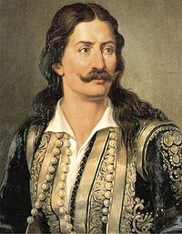
Βιογραφικα στοιχεία
Ο Αθανάσιος Διάκος γεννήθηκε στην Άνω Μουσουνίτσα Φωκίδας ή στην Αρτοτίνα Φωκίδας, το 1788 και ήταν Έλληνας οπλαρχηγός εκ των πρωταγωνιστών ηρώων του πρώτου έτους της Ελληνικής Επανάστασης του 1821, ο οποίος έδρασε στη Στερεά Ελλάδα.Σύμφωνα με μια εκδοχή, το πραγματικό του όνομα ήταν Αθανάσιος Γραμματικόή κατά άλλους Αθανάσιος Μασσαβέτας.
Πριν την επανάσταση
Είχε έφεση στη θρησκεία και σε ηλικία 12 ετών στάλθηκε από τη μητέρα του στο μοναστήρι του Αγίου Ιωάννη του Προδρόμου στην Αρτοτίνα Φωκίδας για την εκπαίδευσή του. Έγινε μοναχός σε ηλικία 17 ετών και, λόγω της αφοσίωσής του στη χριστιανική πίστη και της ιδιοσυγκρασίας του, έγινε πολύ γρήγορα διάκος.Αρχικά κλέφτης υπό την εξουσία διαφόρων καπετάνιων της Ρούμελης, διακρίνεται σε διάφορες συγκρούσεις με τους Τούρκους.Ο Αθανάσιος Διάκος υπήρξε αρματολός για δύο χρόνια (1814-1816) στο στρατό του Αλή πασά τον ίδιο καιρό με τον Οδυσσέα Ανδρούτσο.Μυήθηκε στη Φιλική Εταιρεία το 1818 και το 1820 έγινε αρματολός στη Λιβαδειά.
Στην επανάσταση
Τον Απρίλιο του 1821 σε συνεργασία με άλλους οπλαρχηγούς κατέλαβε το φρούριο της Λιβαδειάς και χρησιμοποιώντας το ως ορμητήριο, έδωσε πολλές νικηφόρες μάχες. Κατέλαβε τη γέφυρα της Αλαμάνας και στις 23 Απριλίου 1821 έδωσε μάχη με τα στρατεύματα του Ομέρ Βρυώνη, στη μάχη αυτή συνελήφθη.
O θάνατος του
Ο Διάκος μεταφέρθηκε από τους Τούρκους στη Λαμία μπροστά στον Ομέρ Βρυώνη, ο οποίος έδειξε συμπάθεια προς τον Διάκο, αλλά ο Χαλήλ μπέης από την πόλη ικέτευσε για την άμεση και παραδειγματική θανάτωσή του, επηρεάζοντας και τον Κιοσέ-Μεχμέτ, που ιεραρχικά ήταν ανώτερος του Ομέρ Βρυώνη. Έτσι την επόμενη μέρα ανασκολοπίστηκε(λογοτεχνικά αναφέρεται ότι "σουβλίστηκε") στις 24 Απριλίου 1821. Tην επομένη της μάχης στην Αλαμάνα. Μετά τον θάνατό του, οι Τούρκοι πέταξαν το λείψανό του σε κοντινό χαντάκι.Ο Ελληνικός Στρατός του απένειμε τιμητικά τον βαθμό του Στρατηγού.
ΜΑΡΚΟΣ ΜΠΟΤΣΑΡΗΣ
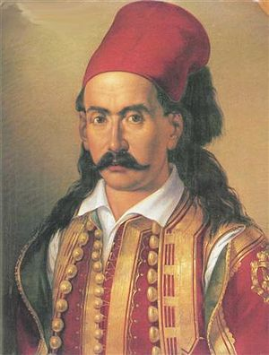
Βιογραφικα στοιχεία
Ο Μάρκος Μπότσαρης γεννήθηκε στο Σούλι Θεσπρωτίας το 1790 και ήταν Έλληνας οπλαρχηγός της Ελληνικής Επανάστασης του 1821 και καπετάνιος των Σουλιωτών. Για τις συνολικές του υπηρεσίες και τη μεγάλη συνεισφορά του στον αγώνα, μετά θάνατον έλαβε τιμητικά το στρατιωτικό βαθμό του Στρατηγού.
Δράση του κατα την επανάσταση
Όταν ξέσπασε η Επανάσταση, νίκησε τους Οθωμανούς στη Βογόρτσα και στα Δερβίζιανα, όπου εξόντωσε ένα ισχυρό μισθοφορικό σώμα με ένα απίστευτο τέχνασμα.Καταλήφθηκαν τα Λέλοβα, ο Κάντζας και το παραθαλάσσιο φρούριο της Ρηνιάσσας.Στη συνέχεια, επιτέθηκε με 600 πολεμιστές σε 2.000 γενίτσαρους που στάθμευαν στη Δραμεσού, κατέλαβε την Κοσμηρά,και νίκησε τον Ισμαήλ Πασά Πλιάσα στο μοναστήρι της Ραψίστας.Ακολούθησαν οι νικηφόρες μάχες στους Βαριάδες (14 Ιουλίου 1821), όπου εκδίωξε τους Οθωμανούς από το φρούριο που μόλις είχαν ανακαταλάβει, και στην Πλάκα (17 Ιουλίου 1821). Συμμετείχε στην πολιορκία της Άρτας.Ο Μπότσαρης, τη νύχτα της 8-9 Αυγούστου,[10] μαζί με τον Κίτσο Τζαβέλα και άλλους 450 Σουλιώτες, επιτέθηκε κατά της εμπροσθοφυλακής των εχθρών, που είχε στρατοπεδεύσει στο Κεφαλόβρυσο του Καρπενησίου, στη μάχη που έμεινε γνωστή ως Μάχη του Κεφαλόβρυσου. Παρά τον αρχικώς ελαφρύ τραυματισμό του, συνέχισε να πολεμάει και κατάφερε να νικήσει τους Τούρκους.
Ο Θάνατος του
Όμως μια εχθρική σφαίρα έπληξε το μάτι του. Ιστορικοί αναφέρουν πως τότε ο Μπότσαρης είπε πριν ξεψυχήσει: «Αδέλφια, με βάρεσαν». Εκείνη τη στιγμή, οι Σουλιώτες, αν και νικούσαν, διέκοψαν τον αγώνα για να παραλάβουν τον νεκρό αρχηγό τους και τα λάφυρα. Οι Σουλιώτες σκότωσαν εκατοντάδες εχθρούς χωρίς όμως να καταφέρουν να σταματήσουν την οθωμανική προέλαση. Μεταφέροντας το σώμα του Μπότσαρη προς το Μεσολόγγι για να τον ενταφιάσουν, σταμάτησαν για λίγο στο νάρθηκα της Μονής Προυσσού, όπου ευρισκόταν ο Γεώργιος Καραϊσκάκης κατάκοιτος από ασθένεια. Αυτός τον ασπάστηκε λέγοντας "Άμποτε ήρωα Μάρκο, κι' εγώ από τέτοιο θάνατο να πάω".
ΕΜΜΑΝΟΥΗΛ ΠΑΠΑΣ
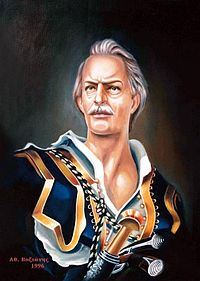
Βιογραφικα στοιχεία
Ο Εμμανουήλ Παπάς γεννήθηκε στη Δοβίστα Μακεδονίας το 1772 και ήταν Έλληνας έμπορος, τραπεζίτης, μέλος της Φιλικής Εταιρείας και οπλαρχηγός της Ελληνικής Επανάστασης του 1821. Υπήρξε πρωτεργάτης της εξέγερσης στη Χαλκιδική και μία από τις αγνότερες και ηρωικότερες μορφές του Αγώνα της Ανεξαρτησίας. Στις 17 Μαΐου του 1821 κήρυξε την Επανάσταση στη Μακεδονία ως "αρχηγός και υπερασπιστής της Μακεδονίας"
Στην επανάσταση
Κατά τη διάρκεια της παραμονής του στην Κωνσταντινούπολη, ο Παπάς μυήθηκε στη Φιλική εταιρεία από τον Κωνσταντίνο Παπαδάτο, άνθρωπο του Αλέξανδρου Υψηλάντη και έγινε αρχιταμίας της εταιρίας στις 21 Δεκεμβρίου 1819.O Εμμανουήλ Παπάς έφυγε από την Κωνσταντινούπολη για το Άγιο Όρος και από εκεί ειδοποίησε το κέντρο των Σερρών και τους παρακίνησε να ξεσηκωθούν. Όμως οι Σερραίοι δεν ανταποκρίθηκαν και δεν επαναστάτησαν.Στις 17 Μαΐου του 1821, κηρύχθηκε η επανάσταση στην Μακεδονία, ενώ ο Εμμανουήλ Παππάς ανακηρύχθηκε "αρχηγός και υπερασπιστής της Μακεδονίας".Αφού εγκατέστησε το αρχηγείο του στο Άγιο Όρος, με τους 2.500 άνδρες του, ανέλαβε δράση με παράλληλες εξεγέρσεις στην Κασσάνδρα, την Ορμύλια, τη Σιθωνία και τα Μαντεμοχώρια. Τον Ιούνιο του 1821, σε συνεργασία με τον καπετάν Χάψα, οπλαρχηγό της Δυτικής Χαλκιδικής, πετυχαίνουν σημαντικές επιτυχίες κατά των Τούρκων στα Στάγειρα και στο Σταυρό, ενώ καταλαμβάνουν και την Ιερισσό. Στις 30 Οκτωβρίου 1821 οι Τούρκοι επιτέθηκαν και διέσπασαν την οχύρωση της Ποτίδαιας, με αποτέλεσμα την πτώση της Κασσάνδρας. Λίγο καιρό μετά παραδόθηκε και η Σιθωνία. Ο Εμμανουήλ Παπάς μόλις και μετά βίας διέφυγε στο Άγιο Όρος.Η κατάσταση εκεί δεν ήταν καλύτερη. Οι ηγούμενοι, μετά την αρνητική εξέλιξη της επανάστασης, αρνήθηκαν να συνεχίσουν τον αγώνα και επιθυμούσαν να διαπραγματευθούν, με τον Νικηφόρο Ιβηρίτη να αδυνατεί να επιβληθεί στους Αγιορείτες μοναχούς.
Ο θάνατος του
Ο Εμμανουήλ Παπάς, μαθαίνοντας και αυτά τα δυσάρεστα νέα, απογοητευμένος, αποφάσισε να αναχωρήσει για την Ύδρα με το ίδιο πλοιάριο του Αντώνη Βισβίζη με το οποίο είχε φτάσει στο Άγιο Όρος στις 23 Μαρτίου του 1821, αλλά εξαντλημένος από τις κακουχίες του πολέμου και από τις συγκινήσεις της τραγικής του περιπέτειας, πέθανε από συγκοπή καρδιάς μέσα στο πλοιάριο, ακριβώς τη στιγμή που έπλεε τον Καφηρέα ή Κάβο Ντόρο,στις 5 Δεκεμβρίου του 1821.
ΝΙΚΗΡΑΡΑΣ
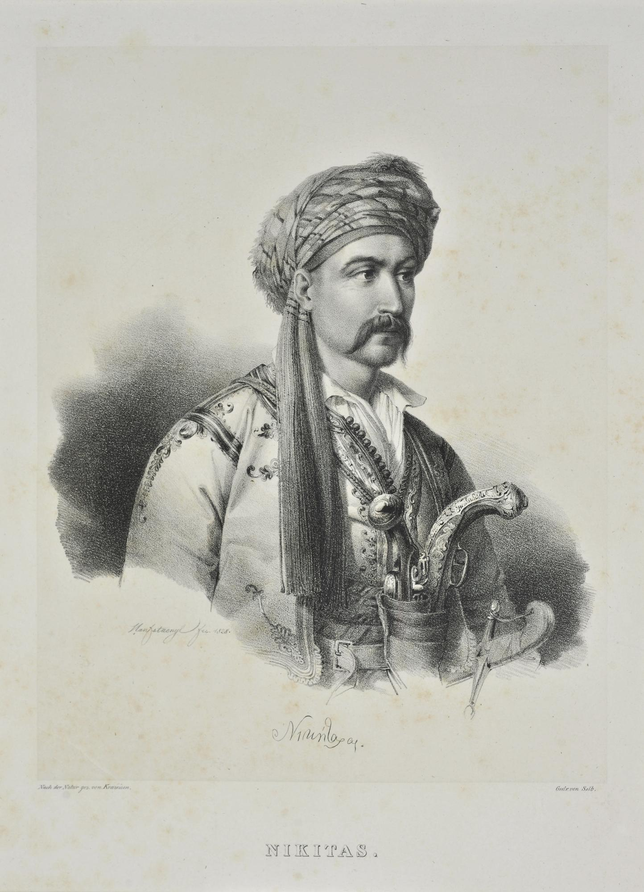
Βιογραφικα στοιχεία
Ο Νικήτας Σταματελόπουλος, γνωστότερος ως Νικηταράς γεννήθηκε στη Νέδουσα Μεσσηνίας το 1781 και ήταν Έλληνας οπλαρχηγός και ηγετική μορφή της Ελληνικής Επανάστασης του 1821. Έμεινε γνωστός και μέσα από το ψευδώνυμό του, ως ο Τουρκοφάγος.Ο Νικηταράς από πολύ νεαρή ηλικία εντάχθηκε ως “μπουλουξής” (επικεφαλής μπουλουκιού) στο σώμα του περιώνυμου κλέφτη Ζαχαριά, όπου διακρίθηκε για την ανδρεία του. Το 1805, μετά το διωγμό των κλεφταρματολών του Μοριά, πήγε στη Ζάκυνθο που τότε την κατείχαν Ρώσοι. Εκεί εντάχθηκε στα Τάγματα που είχαν ιδρυθεί και πολέμησε στην Ιταλία εναντίον του Ναπολέοντα. Αργότερα επέστρεψε στα Επτάνησα και υπηρέτησε τους Γάλλους που τα είχαν καταλάβει με την Συνθήκη του Τίλσιτ. Το 1808, επέστεψε στο Μοριά μαζί με τον θείο του Κολοκοτρώνη για να βοηθήσει τον Αλή Φαρμάκη, που τον καταδίωκε ο Βελή πασάς.
Κατα την επανάσταση
Στις 18 Οκτωβρίου 1818, ενώ βρισκόταν στην Καλαμάτα, μυήθηκε στη Φιλική Εταιρεία από τον Ηλία Χρυσοσπάθη.Με την έκρηξη της Επανάστασης, πήρε μέρος στην πρώτη μάχη που δόθηκε στο Βαλτέτσι της Αρκαδίας στις 24 Απριλίου του 1821 (είχε προηγηθεί συμπλοκή στο Λεβίδι).Μετέπειτα, στη Μάχη των Δολιανών, ο Νικηταράς που κρατούσε με 450 άντρες τα Άνω Δολιανά, κατάφερε να αποκρούσει χιλιάδες Τούρκους που επιτέθηκαν με τη βοήθεια πυροβολικού.Επειδή έπεσαν πολλοί Τούρκοι από το χέρι του εκείνη την ημέρα, οι άντρες του τον ονόμασαν "Τουρκοφάγο".Διακρίθηκε και στις μάχες που ακολούθησαν, όπου συνεργάστηκε με τον θείο του, τον Θεόδωρο Κολοκοτρώνη, κυρίως δε στην πολιορκία και την άλωση της Τριπολιτσάς,και σε άλλες μάχες στη Στερεά Ελλάδα.Ήταν ένας από τους σημαντικότερους αγωνιστές της Επανάστασης του 1821. Συντηρούσε δικό του σώμα ενόπλων με άνδρες που προέρχονταν από διάφορα μέρη της Ελλάδας.Συμμετείχε στην αντιμετώπιση του Δράμαλη στην Πελοπόννησο. Όταν οι Έλληνες κατέστρεψαν τη στρατιά του Δράμαλη στα στενά των Δερβενακίων, ο Νικηταράς μαζί με τους Δημήτριο Υψηλάντη και Παπαφλέσσα είχε καταλάβει τη χαράδρα γύρω από τον Άγιο Σώστη, απ' όπου θα περνούσαν οι Τούρκοι, προκαλώντας τους μεγάλη καταστροφή.Ο Νικηταράς πήρε μέρος σε πολλές ακόμη μάχες, μέχρι που απελευθερώθηκε η χώρα.
Ο θάνατος του
Η ελληνική κυβέρνηση, φοβούμενη ότι το ρωσόφιλο κόμμα επεδίωκε να αντικαταστήσει τον βασιλιά Όθωνα με κάποιον Ρώσο πρίγκηπα, συνέλαβε τον Νικηταρά το 1839 και τον καταδίκασε σε ενάμιση χρόνο φυλάκιση, την οποία εξέτισε στις φυλακές της Αίγινας.Όταν αποφυλακίστηκε, η υγεία του ήταν εξασθενημένη από τα βασανιστήρια που υπέστη κατά τη διάρκεια της φυλάκισής του. Έπασχε από διαβήτη χωρίς να το γνωρίζει, με αποτέλεσμα να χάσει σε μεγάλο βαθμό την όρασή του.Απεβίωσε στις 25 Σεπτεμβρίου 1849 σε ηλικία 68 ετών.Τελευταία του επιθυμία ήταν να ταφεί δίπλα στον θείο του Θεόδωρο Κολοκοτρώνη, στο Α΄ Νεκροταφείο Αθηνών.
ΑΛΕΞΑΝΔΡΟΣ ΥΨΗΛΑΝΤΗΣ

Βιογραφικα στοιχεία
Ο Αλέξανδρος Υψηλάντης γεννήθηκε στις 12 Δεκεμβρίου του 1792 στην Κωνσταντινούπολη και ήταν γιος του Κωνσταντίνου Υψηλάντη, Ηγεμόνα της Μολδοβλαχίας, και της Ελισάβετ Βακαρέσκου και ήταν Έλληνας ευγενής της Ρωσικής αριστοκρατίας, αξιωματικός του Ρωσικού Στρατού που έφερε τον βαθμό του Υποστράτηγου και Αρχηγός της Φιλικής Εταιρείας. Διακρίθηκε στους πολέμους κατά του Ναπολέοντα, όπου στη μάχη της Δρέσδης (27 Αυγούστου 1813) έχασε το δεξί του χέρι (21 ετών).
Αρχηγός της Φιλικής Εταιρείας
O Εμμανουήλ Ξάνθος πήγε στον εξάδελφο των Υψηλάντηδων, Ιωάννη Μάνο, προκειμένου να τον φέρει σε επαφή με τον Πρίγκηπα Αλέξανδρο Υψηλάντη.Στη συνάντηση εκείνη στην Πετρούπολη στις 11 Απριλίου 1820 (παλαιό ημερολόγιο), ο Υψηλάντης τον δέχθηκε με ευγένεια και, ύστερα από κάποιες ερωτήσεις για την καταγωγή του και διάφορες άλλες υποθέσεις, του ζήτησε να μάθει πώς περνούν οι Έλληνες. Ο Ξάνθος του απήντησε ότι οι Τούρκοι τούς τυραννούν και η τυραννία αυτή έχει γίνει πλέον αφόρητη.Ο Υψηλάντης, ενθουσιώδης μεν πατριώτης, αν και χωρίς ιδιαίτερη πολιτική πείρα, δεν άργησε να κυριευθεί από τον δραματικό τόνο της φωνής του Ξάνθου, καθώς και από τον δικό του ενθουσιασμό και τη βαθιά πίστη του στα όνειρα του ελληνικού έθνους.Ο Ξάνθος φανέρωσε στον πρίγκηπα τα μυστικά της Φιλικής Εταιρείας και εκείνος με συγκίνηση και ενθουσιασμό κατηχείται και ορκίζεται κατά το τυπικό της εταιρείας, όπου και αναγνωρίζεται Γενικός Επίτροπος της Αρχής. Του δόθηκε το ψευδώνυμο «Καλός» και τα γράμματα του ελληνικού αλφαβήτου «α.ρ.» για να υπογράφει τις επιστολές του.Η Φιλική Εταιρεία είχε πλέον τον Αρχηγό της.
Κήρυξη της επανάστασης στις παραδουνάβιες ηγεμονίες
Πιεσμένος από τις καταστάσεις ο Υψηλάντης εκδίδει προκήρυξη ανεξαρτησίας, περνάει τον ποταμό Προύθο στις 22 Φεβρουαρίου 1821 και υψώνει τελικά τη σημαία της Επανάστασης στις Παραδουνάβιες Ηγεμονίες και συγκεκριμένα στο Ιάσιο της Μολδοβλαχίας, δύο μέρες αργότερα, στις 24 Φεβρουαρίου, εκδίδοντας επαναστατική προκήρυξη με τον τίτλο Μάχου υπέρ πίστεως και πατρίδος.Συγκροτείται ο Ιερός Λόχος αποτελούμενος από 500 σπουδαστές. Στις 4 Μαρτίου οι Έλληνες ναυτικοί κυριεύουν και εξοπλίζουν 15 πλοία, ενώ στις 17 Μαρτίου ο Υψηλάντης υψώνει τη σημαία στο Βουκουρέστι, αντιμετωπίζοντας το στρατό τριών πασάδων στο Γαλάτσι, το Δραγατσάνι, τη Σλατίνα, το Σκουλένι και το Σέκο. Ο στρατός του Υψηλάντη καταστράφηκε στη μάχη του Δραγατσανίου στις 7 Ιουνίου 1821 και υποχώρησε προς τα αυστριακά σύνορα. Οι λόγοι της αποτυχίας του θα πρέπει να αναζητηθούν κυρίως στην έλλειψη αξιόμαχων δυνάμεων, στην άρνηση του ηγέτη των Βλάχων Θεόδωρου Βλαδιμιρέσκου να τον συνδράμει οικονομικά και στρατιωτικά και στον αφορισμό του Υψηλάντη από τον Πατριάρχη Γρηγόριο Ε', κατόπιν πιέσεων της Υψηλής Πύλης για σφαγές των Χριστιανών σε αντίποινα.Ο Υψηλάντης παραδόθηκε στους Αυστριακούς, φυλακίστηκε και απελευθερώθηκε στις 24 Νοεμβρίου 1827. Η κλονισμένη υγεία του δεν του επέτρεψε έκτοτε να βοηθήσει το επαναστατημένο έθνος.
Ο θάνατος του
Μετά την απελευθέρωσή του, αποσύρθηκε στη Βιέννη, όπου και πέθανε σε συνθήκες ακραίας φτώχειας και μιζέριας στις 19 ή 31 Ιανουαρίου 1828. Η ζωή του και οι τρόποι του υποδεικνύουν ότι είχε μυοτονική δυστροφία (DM), μια κληρονομική διαταραχή πολλαπλών συστημάτων, η οποία μειώνει το προσδόκιμο ζωής.
ΑΝΔΡΕΑΣ ΜΙΑΟΥΛΗΣ
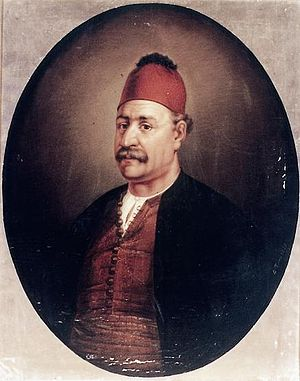
Βιογραφικα στοιχεία
Ο Ανδρέας Βώκος, γνωστότερος με το ψευδώνυμο Ανδρέας Μιαούλης γεννήθηκε στην Ύδρα, στις 20 Μαΐου 1769 και ήταν Έλληνας καραβοκύρης, πολιτικός και ναύαρχος, που διαδραμάτισε πρωταγωνιστικό ρόλο στα γεγονότα της Ελληνικής Επανάστασης του 1821, καθώς και στη μετέπειτα πολιτική ζωή του νεοσύστατου ελληνικού κράτους.Σε νεαρή ηλικία στράφηκε προς τη ναυτιλία εργαζόμενος στα ιδιόκτητα πλοία της οικογένειας, αποκομίζοντας σημαντικό πλούτο για την εποχή. Ιδιαίτερα κέρδη φαίνεται να αποκόμισε κατά τον αγγλογαλλικό πόλεμο (1793–1802), διασπώντας το βρετανικό ναυτικό αποκλεισμό που είχε επιβληθεί στα γαλλικά παράλια. Από τα ταξίδια του Μιαούλη αναφέρονται αρκετές ιστορίες σχετικά με τη γενναιότητα και την τόλμη του.
Συμμετοχή στην επανάσταση του 1821
Στις 27 Μαρτίου του 1821 ο Αντώνιος Οικονόμου ξεσήκωσε τους Υδραίους, κήρυξε την επανάσταση στο νησί και ουσιαστικά ανάγκασε κάτω από την πίεση του λαού τους προεστούς, μεταξύ αυτών και τον Μιαούλη, να συμμετάσχουν στον απελευθερωτικό αγώνα. Την επόμενη μέρα ο Μιαούλης προσέφερε υπέρ της ανεξαρτησίας 3.625 ισπανικά τάλιρα ενώ στις 31 Μαρτίου υπέγραψε ως Αντώνη Βωκού την εκλογή του Οικονόμου ως διοικητή του νησιού.Στις 19 Σεπτεμβρίου ξεκίνησε επικεφαλής 20 υδραίικων πλοίων και 9 σπετσιώτικων για την Πύλο. Πράγματι στις 28 Σεπτεμβρίου έφτασαν και συγκρούστηκαν με τον οθωμανικό στόλο (92 πλοία) στα παράλια της Τριφυλίας και Ηλείας. Ο ελληνικός στόλος υποχώρησε ύστερα από πέντε μέρες ναυμαχίας, αν και είχε προξενήσει σημαντικές ζημιές και απώλειες στα τουρκικά πλοία που ήταν καλύτερα.Μετά από αυτή τη ναυμαχία ο στόλος του Μιαούλη επέστρεψε στις 10 Οκτωβρίου στην Ύδρα.Στις 8 Φεβρουαρίου, ως ναύαρχος πια, ξεκίνησε για τη Ζάκυνθο. Εκεί συναντήθηκε με τα ψαριανά και τα σπετσιώτικα καράβια και στις 20 Φεβρουαρίου πραγματοποιήθηκε η ναυμαχία των Πατρών, όπου ο οθωμανικός στόλος ηττήθηκε και αναγκάστηκε να αποχωρήσει.Το Σεπτέμβριο του ίδιου χρόνου, και αφού είχε λάβει μέρος σε μερικές αψιμαχίες στη Χίο, βρέθηκε στο Ναύπλιο. Εκεί αντιμετώπισε με επιτυχία το στόλο του Καπουδάν πασά που αριθμούσε πάνω από 80 πλοία, σε αντίθεση με τον ελληνικό που είχε 60.Στις 4 Ιουλίου του 1824 ο Μιαούλης έσπευσε καθυστερημένα στα Ψαρά, όπου βρήκε μια μικρή μοίρα του οθωμανικού στόλου, την οποία και κατέστρεψε. Στις 24 Αυγούστου του 1824 ενεπλάκη με τον ενωμένο οθωμανοαιγυπτιακό στόλο, τον οποίο παρέσυρε στον κόλπο του Γέροντα. Στις 29 Αυγούστου πραγματοποιήθηκε η Ναυμαχία του Γέροντα, στην οποία ο εχθρικός στόλος έχασε 27 πολεμικά πλοία.Στις 31 Μαΐου συγκρούστηκε με τον οθωμανικό στόλο στη Σούδα και στη συνέχεια κατευθύνθηκε προς την Ύδρα. Στις 14, 21 και 25 Νοεμβρίου συναντήθηκε με τον οθωμανικό στόλο στη Γλαρέντζα, στο Δραγαμέστο (Ναυμαχία των Πυρπολικών) και στο Μεσολόγγι αντίστοιχα, στον οποίο προκάλεσε μεγάλες καταστροφές.Σημαντική ήταν και η προσφορά του στην ενίσχυση της άμυνας του Μεσολογγίου. Ο Μιαούλης κατά την πρώτη πολιορκία κατάφερνε συνεχώς να διασπά το ναυτικό αποκλεισμό. Τον Ιανουάριο του 1826 βρέθηκε στην πόλη, την οποία και ανεφοδίασε. Η εντύπωση τότε που σχημάτισε ήταν θλιβερή. Σε γράμμα προς την κυβέρνηση ανέφερε ότι το Μεσολόγγι δεν θα μπορούσε να αντέξει για πολύ καιρό ακόμη. Λόγω έλλειψης τροφίμων αναγκάστηκε να φύγει αλλά επανήλθε στις 25 Μαρτίου του ίδιου χρόνου. Μετά την καταστροφή του Μεσολογγίου ο Μιαούλης αναχώρησε για το Αιγαίο, όπου στις 28-30 Αυγούστου, κοντά στη Μυτιλήνη, συγκρούστηκε με τον οθωμανικό στόλο. Στη συγκεκριμένη ναυμαχία και οι δύο πλευρές είχαν μεγάλες απώλειες.
Ο θάνατος του
Tο απόγευμα της Κυριακής 11 Ιουνίου του 1835 απεβίωσε στην οδό Αιόλου 9, κοντά στην εκκλησία της Αγίας Ειρήνης στον Πειραιά, λόγω της φυματίωσης που τον ταλαιπωρούσε μέρες. Λίγες μέρες πριν πεθάνει, ο Όθωνας τον είχε επισκεφθεί δύο φορές και μάλιστα την πρώτη τού είχε επιδώσει το Μεγαλόσταυρο του Σωτήρος. Ενταφιάστηκε σε ακτή του Πειραιά, η οποία από τότε ονομάστηκε Ακτή Μιαούλη. Ο τόπος ταφής δεν ήταν τυχαίος αφού σύμφωνα με την παράδοση εκεί βρισκόταν και ο τάφος του Θεμιστοκλή. Το 1952 τα οστά του μεταφέρθηκαν στη Σχολή Ναυτικών Δοκίμων και το 1986 στην Ύδρα. Η καρδιά του τοποθετήθηκε σε ασημένια λήκυθο και φυλάσσεται στο Μουσείο Ύδρας, ενώ προς τιμήν του κόπηκαν αναμνηστικά μετάλλια που δόθηκαν τιμητικά σε αγωνιστές του 1821.
ΚΩΝΣΤΑΝΤΙΝΟΣ ΚΑΝΑΡΗΣ
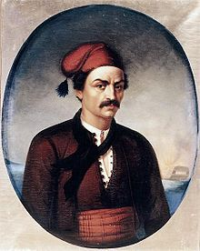
Βιογραφικα στοιχεία
Ο Κωνσταντίνος Κανάρης γεννήθηκε στα Ψαρά, το 1793 και ήταν Έλληνας επαναστάτης, σπουδαία μορφή του ναυτικού αγώνα κατά την Ελληνική Επανάσταση του 1821 και μετέπειτα ναύαρχος και πολιτικός, ο οποίος διετέλεσε πέντε φορές πρωθυπουργός της Ελλάδας σε ένα διάστημα 33,5 ετών (1844, 1848-49, 1864, 1864-65 και 1877) και για 2 χρόνια και 3 μήνες συνολικά.
Στην επανάσταση
Τον Ιούνιο του 1822, αφού ο ελληνικός στόλος δεν κατάφερε να σώσει τη Χίο από την τουρκική σφαγή, ο Κανάρης ανέλαβε να βάλει μπουρλότο στη ναυαρχίδα του Καρά Αλή, του επικεφαλής του στρατού που έσφαξε τους κατοίκους και έκαψε το νησί. Την επιχείρηση θα εκτελούσαν τα πυρπολικά του Κανάρη και του Ανδρέα Πιπίνου. Στο εγχείρημα βοήθησαν δύο παράγοντες: αφενός ότι η νύχτα ήταν πολύ σκοτεινή καθώς δεν είχε φεγγάρι και αφετέρου ότι στο κατάφωτο κατάστρωμα της ναυαρχίδας οι περίπου 2.000 Τούρκοι γιόρταζαν το Μπαϊράμι κι έτσι τα μέτρα φρούρησης ήταν ελλιπή. Η φωτιά απ' το μπουρλότο μεταδόθηκε ταχύτατα στο καράβι. Πριν προλάβουν να απομακρυνθούν απ' αυτό οι πρώτες σωστικές λέμβοι, η φωτιά έφτασε στην πυριτιδαποθήκη, η οποία ανατινάχθηκε. Ως αποτέλεσμα τα θύματα ήταν πάρα πολλά. Μεταξύ αυτών ο ναύαρχος Καρά Αλής, αξιωματικοί του και πολλοί ναύτες.στις 29 Οκτωβρίου 1822, ο Κανάρης, συνοδευόμενος από το Δημήτριο Βρατσάνο, πέρασε ανάμεσα από τον τουρκικό στόλο και μην μπορώντας να προσεγγίσει το πλοίο του ναυάρχου, την καπουδάνα, κόλλησε το πυρπολικό του στην αντιναυαρχίδα «Ρίαλα-Γεμισί» και την τίναξε στον αέρα. Έχασαν τη ζωή τους 800 μέλη του πληρώματος.Τον επόμενο χρόνο, ο Κανάρης πραγματοποίησε επιθέσεις στα μικρασιατικά παράλια, αλλά χωρίς μεγάλη επιτυχία. Δεν μπόρεσε, επίσης, να κάνει τίποτε όταν το 1824 ο Χοσρέφ-Μεχμέτ Πασάς κατέστρεψε τα Ψαρά. Όμως, τον Αύγουστο του 1824 πυρπόλησε μια μεγάλη φρεγάτα του Χοσρέφ στη Σάμο και μια κορβέττα στη Μυτιλήνη.
Η πολιτική σταδιοδρομία
Μετά τη μεταπολίτευση του 1843, ο Κανάρης έγινε υπουργός Ναυτικών στην κυβέρνηση Ανδρέα Μεταξά και κατόπιν στην κυβέρνηση Ιωάννη Κωλέττη. Το 1854 έγινε υπουργός Ναυτικών στην κυβέρνηση Αλέξανδρου Μαυροκορδάτου. Επειδή οι ιδέες του γίνονταν όλο και περισσότερο αντιμοναρχικές, το 1861 αρνήθηκε τη σύνταξη που του χορήγησε η Κυβέρνηση. Το καλοκαίρι του 1862 ο Όθωνας του ανέθεσε τον σχηματισμό κυβέρνησης. Ο Κανάρης πρότεινε έναν κατάλογο με υπουργούς, που όλοι τους είχαν σχεδόν επαναστατικές απόψεις, λέγοντας στον Όθωνα ότι μόνο με τέτοια κυβέρνηση και η μοναρχία θα ήταν δυνατό να σωθεί και η τάξη στη χώρα να διατηρηθεί. Ο Όθωνας όμως δεν δέχθηκε και έδωσε την εντολή στον Ιωάννη Κολοκοτρώνη.Κατόπιν το 1864 σχημάτισε ο ίδιος κυβέρνηση, μετά από ένα μήνα παραιτήθηκε και σχημάτισε και πάλι κυβέρνηση, η οποία παρέμεινε επί ένα χρόνο στην εξουσία. Κατόπιν παραιτήθηκε οριστικά, θέλοντας να αποσυρθεί από τον δημόσιο βίο καθώς είχε υπερβεί τα 75 χρόνια.
Ο θάνατος του
Στις 2 Σεπτεμβρίου 1877(84 ετών), χτυπημένος από ημιπληγία, πεθαίνει από ανακοπή καρδιάς, όντας εν ενεργεία πρωθυπουργός. Η τελευταία του κατοικία βρίσκεται δίπλα στην είσοδο του Α' Νεκροταφείου, ενώ αρκετά χρόνια έζησε και στην περιοχή της Κυψέλης.
ΛΑΣΚΑΡΙΝΑ ΜΠΟΥΜΠΟΥΛΙΝΑ
Βιογραφικα στοιχεία
Η Λασκαρίνα "Μπουμπουλίνα" Πινότση γεννήθηκε στην Κωνσταντινούπολη στις 11 Μαΐου 1771 και ήταν Ελληνίδα ηρωίδα της Ελληνικής Επανάστασης του 1821. Πολέμησε ηρωικά το 1821 και υπήρξε ίσως η σπουδαιότερη γυναίκα που έλαβε μέρος στην Επανάσταση. Μετά θάνατον και ύστερα από 193 έτη, έλαβε τιμητικά από την Ελληνική Πολιτεία το βαθμό της Υποναυάρχου. Παντρεύτηκε δυο φορές, στην ηλικία των 17 με τον Σπετσιώτη Δημήτριο Γιάννουζα και στην ηλικία των 30 ετών με τον Σπετσιώτη πλοιοκτήτη και πλοίαρχο Δημήτριο Μπούμπουλη. Και οι δυο σκοτώθηκαν από Αλγερινούς πειρατές. Της άφησαν, ωστόσο, μια τεράστια περιουσία, την οποία ξόδεψε εξ ολοκλήρου για να αγοράσει καράβια και εξοπλισμό για την Ελληνική Επανάσταση.
Στην επανάσταση
Όταν ξεκίνησε η ελληνική επανάσταση, είχε σχηματίσει δικό της εκστρατευτικό σώμα από Σπετσιώτες, τους οποίους αποκαλούσε «γενναία μου παλικάρια». Είχε αναλάβει να αρματώνει, να συντηρεί και να πληρώνει τον στρατό αυτό μόνη της όπως έκανε και με τα πλοία της και τα πληρώματά τους, κάτι που συνεχίστηκε επί σειρά ετών και την έκανε να ξοδέψει πολλά χρήματα για να καταφέρει να περικυκλώσει τα τουρκικά οχυρά, το Ναύπλιο και την Τρίπολη. Έτσι τα δύο πρώτα χρόνια της επανάστασης είχε ξοδέψει όλη της την περιουσία.Μετά την κατάληψη του Ναυπλίου από τους Έλληνες στις 30 Νοεμβρίου 1822, το νεοσύστατο κράτος της έδωσε κλήρο στην πόλη ως ανταμοιβή για την προσφορά της στο έθνος και η Μπουμπουλίνα εγκαταστάθηκε εκεί.Το 1825 η Μπουμπουλίνα ζούσε στις Σπέτσες, πικραμένη από τους πολιτικούς και την εξέλιξη του Αγώνα και έχοντας ξοδέψει όλη την περιουσία της στον πόλεμο, η Ελλάδα βρέθηκε ξανά σε μεγάλο κίνδυνο. Στις 12 Φεβρουαρίου ο Αιγύπτιος ναύαρχος Ιμπραήμ Πασάς με έναν τουρκοαιγυπτιακό στόλο, αποβιβάστηκε στο λιμάνι της Πύλου στην Πελοπόννησο με 4.400 άντρες, σε μια τελευταία προσπάθεια να σταματήσει την επανάσταση.
Ο θάνατος της
Η Μπουμπουλίνα άρχισε να προετοιμάζεται ξανά, αλλά σκοτώθηκε σε συμπλοκή στις 22 Μαΐου 1825.Ο μικρότερος γιος της από τον πρώτο της γάμο, ερωτεύτηκε την κόρη της πολύ πλούσιας οικογένειας των Κουτσαίων, προκρίτων στις Σπέτσες. Οι Κουτσαίοι δεν ήθελαν τον γάμο μεταξύ των δύο οικογενειών διότι η Μπουμπουλίνα είχε ξοδέψει πια την τεράστια περιουσία της και είχε παραπέσει οικονομικά.Οι δύο νέοι όμως κλέφτηκαν και πήγαν στο σπίτι του πρώτου άντρα της Μπουμπουλίνας, του Δημητρίου Γιάννουζα. Η Μπουμπουλίνα πήγε και αυτή στο σπίτι ενώ λίγο αργότερα έφτασαν και οι Κουτσαίοι πολύ εξαγριωμένοι με την απαγωγή, την οποία θεώρησαν μεγάλη προσβολή, σύμφωνα με τα έθιμα της εποχής. Κατά τη διάρκεια λογομαχίας μεταξύ Μπουμπουλίνας και Κουτσαίων, ο Ιωάννης Κούτσης πυροβόλησε και σκότωσε τη Μπουμπουλίνα.
ΜΑΝΤΩ ΜΑΥΡΟΓΕΝΟΥΣ

Βιογραφικα στοιχεία
Η Μαντώ Μαυρογένους γεννήθηκε στην Τεργέστη το 1796 και ήταν Ελληνίδα αγωνίστρια της Ελληνικής Επανάστασης του 1821, με καταγωγή από τη Μύκονο. Για τη συνολική της προσφορά στον Αγώνα τιμήθηκε από τον Ιωάννη Καποδίστρια με το βαθμό της Αντιστρατηγού.Ήταν κόρη του εμπόρου και μέλους της Φιλικής Εταιρείας, Νικόλαου Μαυρογένη. Λίγο καιρό πριν την Επανάσταση μετακόμισε με τον θείο της τον παπα-Μαύρο στην Τήνο. Ήταν μια όμορφη γυναίκα αριστοκρατικής καταγωγής, και μεγάλωσε σε μια μορφωμένη οικογένεια, επηρεασμένη από την εποχή του Διαφωτισμού
Η δράση στην Επανάσταση
Με πλοία εξοπλισμένα με δικά της έξοδα, καταδίωξε 200 Αλγερινούς που λυμαίνονταν τις Κυκλάδες, και αργότερα πολέμησε στην Κάρυστο, τη Φθιώτιδα και τη Λιβαδειά.Εξόπλισε δύο επανδρωμένα και ιδιωτικά πλοία με δικά της έξοδα, με τα οποία καταδίωξε τους πειρατές που επιτέθηκαν στη Μύκονο και σε άλλα νησιά των Κυκλάδων. Μετά την καταστροφή της Χίου, μία μοίρα Αλγερινών σκαφών, με συνολική δύναμη 200 ανδρών, επιχείρησε να αποβιβαστεί στη Μύκονο, αλλά υποχρεώθηκε ν' αποχωρήσει ύστερα από την αντίσταση που προέβαλαν οι νησιώτες, οργανωμένη από τη Μαυρογένη.Εξόπλισε και εφοδίασε 150 άνδρες για να εκστρατεύσει στην Πελοπόννησο και έστειλε δυνάμεις και οικονομική υποστήριξη στη Σάμο, όταν το νησί απειλήθηκε από τους Τούρκους. Αργότερα, η Μαυρογένη έστειλε ένα άλλο σώμα 50 ανδρών στην Πελοπόννησο, οι οποίοι συμμετείχαν στην Άλωση της Τριπολιτσάς από τους Έλληνες. Επίσης ξόδεψε χρήματα για την ανακούφιση των στρατιωτών και των οικογενειών τους, αλλά και για την προετοιμασία μιας εκστρατείας προς τη Βόρεια Ελλάδα με την υποστήριξη πολλών Φιλελλήνων.Αργότερα δημιούργησε ένα στόλο έξι πλοίων και πεζικό αποτελούμενο από δεκαέξι λόχους, με 50 άντρες ο καθένας, και έλαβε μέρος σε επιχειρήσεις στην Κάρυστο το 1822, και επίσης χρηματοδότησε την εκστρατεία της Χίου, όμως δεν κατάφερε να εμποδίσει τη σφαγή της Χίου.Μια άλλη ομάδα 50 ανδρών στάλθηκε για να ενισχύσει τον Νικηταρά στη μάχη των Δερβενακίων. Όταν ο οθωμανικός στόλος εμφανίστηκε στις Κυκλάδες, επέστρεψε στην Τήνο και πούλησε τα κοσμήματά της για τη χρηματοδότηση του εφοδιασμού και εξοπλισμού των 200 ανδρών που πολεμούσαν τον εχθρό.Tο 1823 η Μαυρογένους γνώρισε τον Δημήτριο Υψηλάντη, με τον οποίον και αρραβωνιάστηκε σε σύντομο χρονικό διάστημα. Σύντομα, έγινε διάσημη σε όλη την Ευρώπη για την ομορφιά και τη γενναιότητά της. Αλλά το Μάιο του ίδιου χρόνου, το σπίτι της κάηκε τελείως και η περιουσία της εκλάπη. Μετά από αυτό πήγε στην Τρίπολη για να είναι μαζί με τον Υψηλάντη, ενόσω ο Παπαφλέσσας τής παρείχε τροφή.Όταν ο πόλεμος τελείωσε, για τη συνολική δραστηριότητά της ο Ιωάννης Καποδίστριας τής απένειμε — τιμή μοναδική σε γυναίκα — το αξίωμα της Αντιστράτηγου επί τιμή.
Δίωξη από τον Κωλέττη και τελευταία χρόνια
Στον αρραβώνα της Μαυρογένη με τον Υψηλάντη αντιτάχθηκαν πολλοί από τους ισχυρούς πολιτικούς.Ο επικεφαλής των αντιπάλων τους στην Ελλάδα ήταν ο πολιτικός Ιωάννης Κωλέττης, ο οποίος κατάφερε και διέλυσε τον αρραβώνα. Η Μαντώ, μετά τη διάλυση του αρραβώνα επέστρεψε στο Ναύπλιο όπου ζούσε βαθιά καταθλιπτικά, σε κατάσταση εξαθλίωσης, στερήσεων και φτώχειας.Μετά το θάνατο του Υψηλάντη, και με ενέργειες του Ιωάννη Κωλέττη, εξορίστηκε από το Ναύπλιο και οδηγήθηκε στη Μύκονο.Ακολούθως, μετακόμισε στην Πάρο το 1840, όπου κατοικούσαν μερικοί από τους συγγενείς της. Πέθανε από τυφοειδή πυρετό στην Πάρο τον Ιούλιο του 1840, μόνη, λησμονημένη και πάμφτωχη, έχοντας ξοδέψει όλη της την περιουσία για τον αγώνα για την ελευθερία.